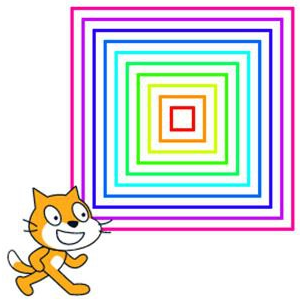

<div>
  завдання на 25.03.25

  Цей Scratch, що створює набір квадратів, розташованих один в одному.
  
  Опис алгоритму:
  
  Початкове положення: Спрайт переміщується в точку (-10, -10).

  Ініціалізація змінної: Змінній a присвоюється значення 20.

  Цикл повторення (поки a не стане більше 200):

  Опускає олівець (починає малювати).

  Малює квадрат (4 рази рухається вперед на a кроків і повертається на 90 градусів).

  Піднімає олівець (припиняє малювання).

  Змінює колір олівця на 10.

  Збільшує розмір квадрата: a збільшується на 20.

  Зсуває позицію початку малювання (змінює x і y на -10).

  Результат:

  Алгоритм малює концентричні квадрати, що збільшуються в розмірах і змінюють колір.

  
  
</div>

